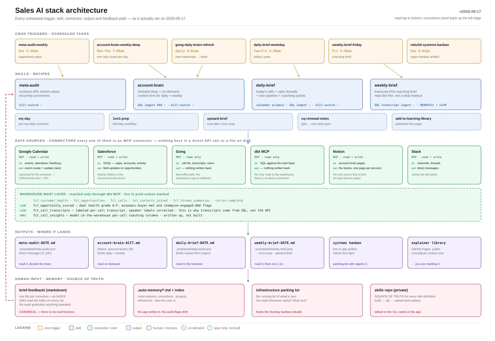

How the pieces fit: scheduled triggers fire skills, skills pull from data sources, outputs land where the team reads them, and human feedback loops back into memory.

Read it left to right: cron triggers at the top kick off the skills, each skill reads from one or more connectors, the result gets written to an output destination, and corrections flow back into memory so the next run is sharper. Swap in a fresh SVG whenever the architecture changes.